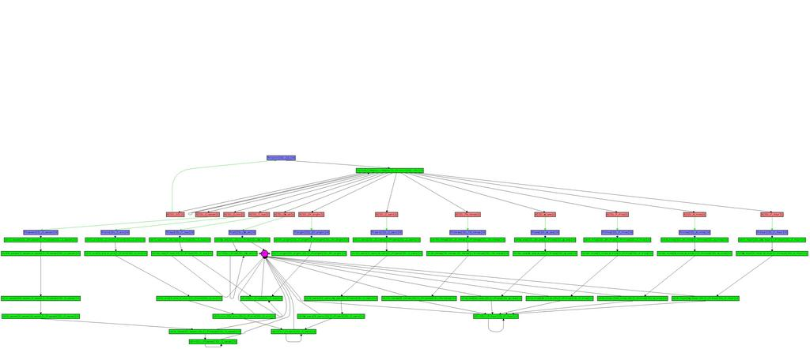

Visualizing large data sets.
In developing Sphinx-4 (our speech recognizer written in the Java programming language), we often are dealing with large graphs that define the search space. When debugging the system, we often will want to visualize these large graphs to ensure that they are constructed properly.
To do this we use a program called aiSee. AiSee is a software package for laying out and displaying graphs. AiSee has a number of algorithms for laying out different styles of graphs. There are a number of examples on their Gallery page.
AiSee uses a little language called GDL The Graph Description Language . Here's a good example of GDL for a graph that looks like this:

We've instrumented Sphinx-4 to dump out upon request GDL for the important data structures. With this we can explore our large data structures using aiSee. Here are some examples.
Component Hierarchy
This plot shows the various high level components in a typical Sphinx-4 configuration and how the components relate to each other:

JSGF Grammar Graph
This is a word graph that represents the simple JSGF Grammar:
public <basicCmd> = <startPolite> <command> <endPolite>; <command> =

Search Graph Here's an example of a very small (isolated digits) search graph:

AiSee is not open source, but it is available for free for non-commercial use. It is an essential part of our toolkit for developing Sphinx-4.
Posted by John D. Mitchell on June 11, 2004 at 10:33 AM EDT #